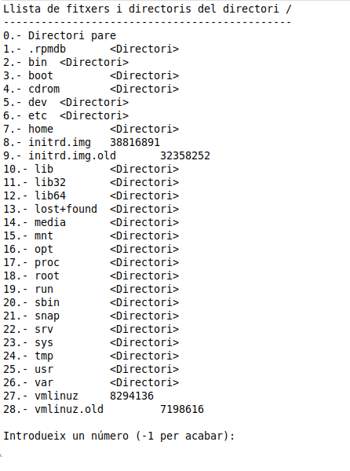

Ejemplo completo y ejercicio
Ejemplo: Explorador básico del sistema de archivos
import java.io.File
import java.nio.file.*
import java.nio.file.attribute.BasicFileAttributes
import java.nio.file.FileStore
import java.nio.file.FileSystems
fun main() {
println(" Raíces del sistema:")
File.listRoots().forEach { raiz ->
println("- ${raiz.absolutePath}")
}
println("\n Sistemas de archivos detectados:")
val fileSystem: FileSystem = FileSystems.getDefault()
fileSystem.fileStores.forEach { store: FileStore ->
println("Unidad: ${store.name()} (${store.type()})")
println("Total: ${store.totalSpace / 1024 / 1024} MB")
println("Libre: ${store.usableSpace / 1024 / 1024} MB")
}
// Usamos Path y Files para analizar un fichero concreto
val path: Path = Paths.get("datos.txt")
// Si el fichero existe, mostramos sus atributos
if (Files.exists(path)) {
println("\n Atributos del fichero '${path.fileName}':")
val attrs: BasicFileAttributes = Files.readAttributes(path, BasicFileAttributes::class.java)
println("Creación: ${attrs.creationTime()}")
println("Último acceso: ${attrs.lastAccessTime()}")
println("Última modificación: ${attrs.lastModifiedTime()}")
println("Tamaño: ${attrs.size()} bytes")
println("¿Es directorio?: ${attrs.isDirectory}")
println("¿Es archivo normal?: ${attrs.isRegularFile}")
} else {
println("\n El fichero 'datos.txt' no existe en la raíz del proyecto.")
}
}
Ejercicio propuesto: Crea un programa en Kotlin que:
- Liste todas las unidades del sistema (C:, D:, /, etc.).
- Pida al usuario que introduzca una ruta (fichero o carpeta).
- Si la ruta existe:
- Muestra si es un archivo o un directorio.
- Muestra la fecha de creación, último acceso y última modificación.
- Muestra su tamaño.
- Muestra el tipo y espacio disponible de la unidad donde está almacenado.
- Si no existe, indica que la ruta no es válida.
- Además, muestra el separador de directorios del sistema y el nombre del sistema de archivos.
Extras opcionales (para ampliar)
- Permitir al usuario navegar recursivamente por los subdirectorios.
- Mostrar los archivos contenidos si la ruta es un directorio.
- Detectar si el archivo tiene permisos de lectura, escritura o ejecución.
- Mostrar si el archivo está oculto.
| Competencia | Detalle |
|---|---|
| RA3 – Planifica la ejecución del proyecto | Análisis y diseño de recorrido de sistema de archivos |
| RA4 – Define procedimientos de control | Verificación de existencia y atributos de ficheros |
| CE – Acceso a estructuras de almacenamiento | Uso de rutas, atributos y sistemas de ficheros reales |
📘 Actividad evaluable: Mini-indexador de archivos
🎯 Objetivo
Diseñar un programa en Kotlin que recorra un directorio de forma recursiva, analice sus archivos y genere un informe personalizado con información detallada de cada uno, aplicando técnicas del sistema de ficheros con java.nio.file.
📝 Enunciado
Desarrolla una aplicación que:
- Solicite al usuario un directorio raíz (por consola o argumento).
- Recorra recursivamente todos los archivos y subdirectorios.
- Genere un informe (en
.txt,.csvo.md) que contenga, para cada archivo: - Nombre del archivo
- Ruta absoluta
- Ruta relativa desde la raíz indicada
- Tamaño en KB
- Fecha de última modificación
- Unidad o volumen donde está almacenado
- Al final del informe, incluye estadísticas como:
- Total de archivos y carpetas
- Tamaño total acumulado
- Archivo más grande
- Archivo más reciente
🧩 Requisitos técnicos
- Uso de
Path,Files,BasicFileAttributes,FileStoreyFileSystem - Uso de
Files.walk()o alternativa recursiva - Generación de archivo de salida (
Files.write()oBufferedWriter) - Comentarios explicativos en el código
- Código estructurado y legible
🧠 Criterios de evaluación
| Criterio | Peso |
|---|---|
| Funcionalidad general | 30% |
| Uso correcto de las clases de NIO | 20% |
| Cálculo y presentación de estadísticas | 15% |
| Generación clara del informe | 15% |
| Documentación y estilo de código | 10% |
| Propuesta de mejora o extra (opcional) | 10% |
🎯 Rúbrica de niveles
| Nivel | Descripción |
|---|---|
| ⭐ Básico | El programa recorre el directorio y lista archivos correctamente. No incluye rutas relativas ni estadísticas completas. |
| ✅ Competente | Incluye rutas relativas, atributos básicos (Files, Path, BasicFileAttributes) y genera un informe funcional en texto. |
| 🏆 Excelente | Añade cálculo de estadísticas, identifica el archivo más grande/reciente, usa correctamente FileStore, y organiza bien la salida. |
| 🚀 Extra | Permite aplicar filtros (por extensión, fecha...), elegir formato de salida (CSV, Markdown) o integrar interfaz simple. |
📁 Entrega
- Código fuente (
.kt) - Archivo generado de informe
- Explicación breve del funcionamiento (opcional
.md)
Exercicis
Exercici T1_1
Realiza un programa utilizando la libreria java.nio en un archivo llamado Ejercicio_1.kt en el paquete ejercicios, que permita navegar por los directorios de la unidad principal del sistema de archivos.
- Tiene que empezar por la raíz.
- Debe indicar el directorio que está mostrando.
- Debe poner como primera opción ir al directorio padre (opción 0).
- Debe poner un número delante de cada archivo o subdirectorio que se está mostrando. Observe que este número comienza con 1 (el 0 es para el padre). Si se ha guardado en un array la lista de archivos y directorios del directorio actual, recuerde que el primer elemento es el 0 (pero usted lo mostrará con un 1 delante).
- En caso de ser un archivo debe decir el tamaño. En caso de ser un subdirectorio, debe indicarlo con < directorio>
-
Posteriormente debe dejar introducir un número. Las opciones serán:
- 1 para terminar
- 0 ir al directorio padre.
- Si se ha elegido el 0 (para ir al padre) debe controlarse que existe el padre (en el caso de la raíz, no tiene). Si no lo tiene, no se debe hacer nada.
- Cualquier otro número debe servir para cambiar a ese directorio como directorio activo. Si era un archivo, no debe hacer nada (en la imagen, no se puede ir al 9, ya que es un archivo).
- Se debe controlar que hay permiso de lectura sobre un directorio, antes de cambiar a él, sino dará error (en la imagen, por ejemplo, seguramente no se podrá cambiar en el directorio root, ya que no tendremos permiso de lectura sobre él). Esta comprobación debe realizarse antes de cambiar al directorio elegido.
- Y debe controlarse que el número introducido está en el rango correcto (en la imagen, de -1 hasta 28)
Realitza un programa en un fitxer anomenat Exercici_1.kt en el paquet exercicis , que permeta navegar pels directoris de la unitat principal del sistema d'arxius.
- Ha de començar per l'arrel (/ en Linux; c:\ en Windows). Recordeu que el mètode estàtic File.listRoots()[0] ens dóna l'arrel.
- Ha d'indicar el directori que està mostrant.
- Ha de posar com a primera opció anar al directori pare (opció 0).
- Ha de posar un número davant de cada arxiu o subdirectori que s'està mostrant. Observeu que aquest número comença amb 1 (el 0 és per al pare). Si us heu guardat en un array la llista de fitxers i directoris del directori actual, recordeu que el primer element és el 0 (però vosaltres el mostrareu amb un 1 davant).
- En cas de ser un arxiu ha de dir la grandària. En cas de ser un subdirectori, ha d'indicar-lo amb < directori>
- Posteriorment ha de deixar introduir un número. Les opcions seran:
- -1 per acabar
- 0 anar al directori pare.
- Si s'ha triat el 0 (per anar al pare) s'ha de controlar que existeix el pare (en el cas de l'arrel, no en té). Si no en té, no s'ha de fer res.
- Qualsevol altre número ha de servir per canviar a aquest directori com a directori actiu. Si era un fitxer, no ha de fer res (en la imatge, no s'ha de poder anar al 9, ja que és un fitxer).
- S'ha de controlar que hi ha permís de lectura sobre un directori, abans de canviar a ell, sinó donarà error (en la imatge, per exemple, segurament no es podrà canviar al directori root , ja que no tindrem permís de lectura sobre ell). Aquesta comprovació s'ha de fer abans de canviar al directori triat.
- I s'ha de controlar que el número introduït està en el rang correcte (en la imatge, de -1 fins a 28)
La següent imatge mostra el resultat:

Llicenciat sota la Llicència Creative Commons Reconeixement NoComercial CompartirIgual 2.5